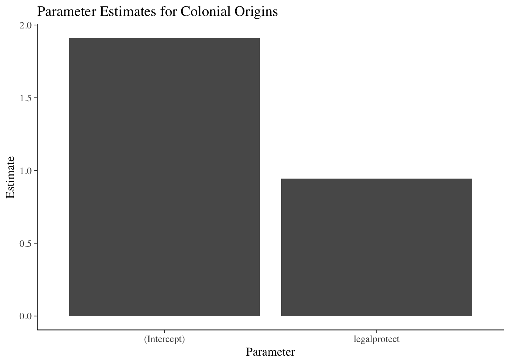

“The Big Page”
A single page containing all the modules
R Basics
R & Statistical Programming
Purpose of statistical programming software
Unlike spreadsheet applications (like Excel) or point-and-click statistical analysis software (SPSS), statistical programming software is based around a script-file where the user writes a series of commands to be performed,
Advantages of statistical programming software
Data analysis process is reproducible and transparent.
Due to the open-ended nature of language-based programming, there is far more versatility and customizability in what you can do with data.
Typically statistical programming software has a much more comprehensive range of built-in analysis functions than spreadsheets etc.
Characteristics of R
R is an open-source language specifically designed for statistical computing (and it’s the most popular choice among statisticians)
Because of its popularity and open-source nature, the R community’s package development means it has the most prewritten functionality of any data analysis software.
Differs from software like Stata, however, in that while you can use prewritten functions, it is equally adept at programming solutions for yourself.
Because it’s usage is broader, R also has a steeper learning curve than Stata.
Comparison to other statistical programming software
- Stata: The traditional choice of (academic) economists.
- Stata is more specifically econometrics focused and is much more command-oriented. Easier to use for standard applications, but if there’s not a Stata command for what you want to do, it’s harder to write something yourself.
- Stata is also very different than R in that you can only ever work with one dataset at a time, while in R, it’s typical to have a number of data objects in the environment.
- Stata is more specifically econometrics focused and is much more command-oriented. Easier to use for standard applications, but if there’s not a Stata command for what you want to do, it’s harder to write something yourself.
SAS: Similar to Stata, but more commonly used in business & the private sector, in part because it’s typically more convenient for massive datasets. Otherwise, I think it’s seen as a bit older and less user-friendly.
Python: Another option based more on programming from scratch and with less prewritten commands. Python isn’t specific to math & statistics, but instead is a general programming language used across a range of fields.
Probably the most similar software choice to R at this point, with better general use (and programming ease) at the cost of less package development specific to econometrics/data analysis.Matlab: Popular in macroeconomics and theory work, not so much in empirical work. Matlab is powerful, but is much more based on programming “from scratch” using matrices and mathematical expressions.
Useful resources for learning R
- DataCamp: interactive online lessons in R.
- Some of the courses are free (particularly community-written lessons like the one you’ll do today), but for paid courses, DataCamp costs about 300 SEK / mo.
RStudio Cheat Sheets: Very helpful 1-2 page overviews of common tasks and packages in R.
Quick-R: Website with short example-driven overviews of R functionality.
StackOverflow: Part of the Stack Exchange network, StackOverflow is a Q&A community website for people who work in programming. Tons of incredibly good R users and developers interact on StackExchange, so it’s a great place to search for answers to your questions.
R-Bloggers: Blog aggregagator for posts about R. Great place to learn really cool things you can do in R.
R for Data Science: Online version of the book by Hadley Wickham, who has written many of the best packages for R, including the Tidyverse, which we will cover.
Getting Started in R
RStudio GUI
RStudio is an is an integrated development environment (IDE).
This means that in addition to a script editor, it also let’s you view your environments, data objects, plots, help files, etc directly within the application.

Executing code from the script
To execute a section of code, highlight the code and click “Run” or use Ctrl-Enter.
For a single line of code, you don’t need to highlight, just click into that line.
To execute the whole document, the hotkey is Ctrl-Shift-Enter.
Style advise
Unlike Stata, with R you don’t need any special code to write multiline code - it’s already the default (functions are written with parentheses, so its clear when the line actually ends.)
So there’s no excuse for really long lines. Accepted style suggests using a 80-character limit for your lines.
- RStudio has the option to show a guideline for margins. Use it!
- Go to Tools -> Global Options -> Code -> Display, then select Show Margin and enter 80 characters.
You can also write multiple expressions on the same line by using ; as a manual line break.
Help files in R
You can access the help file for any given function using the help function. You can call it a few different ways:
- In the console, use help()
- In the console, use ? immediately followed by the name of the function (no space inbetween)
- In the Help pane, search for the function in question.
? is shorter, so that’s the most frequent method.
# Help on the lm (linear regression) function
?lmSetting the working directory
To set the working directory, use the function setwd(). The argument for the function is simply the path to the working directory, in quotes.
However: be sure that the slashes in the path are forward slashes (/). For Windows, this is not the case if you copy the path from File Explorer so you’ll need to change them.
# Set Working Directory
setwd("C:/Users/Andrew/Documents/MyProject")
Data Types & Operations
Math operations in R
Examples of basic mathematical operations in R:
# Addition and Subtraction
2 + 2## [1] 4# Multiplication and Division
2*2 + 2/2## [1] 5# Exponentiation and Logarithms
2^2 + log(2)## [1] 4.693147Logical operations in R
You can also evaluate logical expressions in R
## Less than
5 <= 6## [1] TRUE## Greater than or equal to
5 >= 6## [1] FALSE## Equality
5 == 6## [1] FALSE## Negatiion
5 != 6## [1] TRUEYou can also use AND ( &) and OR ( |) operation with logical expressions:
## Is 5 equal to 5 OR 5 is equal to 6
(5 == 5) | (5 == 6)## [1] TRUE## 5 less 6 AND 6 < 5
(5 < 6) & (7 < 6)## [1] FALSEDefining an object
To define an object, use <-. For example
# Assign 2 + 2 to the variable x
x <- 2 + 2Note: In R, there is no distinction between defining and redefining an object (a la gen/replace in Stata).
y <- 4 # Define y
y <- y^2 # Redefine y
y #Print y ## [1] 16Data classes
Data elements in R are categorized into a few seperate classes (ie types)
numeric: Data that should be interpreted as a number.
logical: Data that should be interpreted as a logical statment, ie. TRUE or FALSE.
- character: Strings/text.
- Note, depending on how you format your data, elements that may look like logical or numeric may instead be character.
factor: In affect, a categorical variable. Value may be text, but R interprets the variable as taking on one of limited number of possible values (e.g. sex, municipality, industry etc)
What’s the object class?
a <- 2; class(a)## [1] "numeric"b <- "2"; class(b)## [1] "character"c <- TRUE; class(c)## [1] "logical"d <- "True"; class(d)## [1] "character"
Vectors & Matrices
Vectors
The basic data structure containing multiple elements in R is the vector.
An R vector is much like the typical view of a vector in mathematics, ie it’s basically a 1D array of elements.
Typical vectors are of a single-type (these are called atomic vectors).
A list vector can also have elements of different types.
Creating vectors
To create a vector, use the function c().
# Create `days` vectors
days <- c("Mon","Tues","Wed",
"Thurs", "Fri")
# Create `temps` vectors
temps <- c(13,18,17,20,21)
# Display `temps` vector
temps## [1] 13 18 17 20 21Naming vectors
You can name a vector by assigning a vector of names to c(), where the vector to be named goes in the parentheses.
# Assign `days` as names for `temps` vector
names(temps) <- days
# Display `temps` vector
temps## Mon Tues Wed Thurs Fri
## 13 18 17 20 21Subsetting vectors
There are multiple ways of subsetting data in R. One of the easiest methods for vectors is to put the subset condition in brackets:
# Subset temps greater than or equal to 10
temps[temps>=18]## Tues Thurs Fri
## 18 20 21Operations on vectors
Operations on vectors are element-wise. So if 2 vectors are added together, each element of the \(2^{nd}\) vector would be added to the corresponding element from the \(1^{st}\) vector.
# Temp vector for week 2
temps2 <- c(8,10,10,15,16)
names(temps2) <- days
# Create average temperature by day
avg_temp <- (temps + temps2) / 2
# Display `avg_temp`
avg_temp## Mon Tues Wed Thurs Fri
## 10.5 14.0 13.5 17.5 18.5Matrices
Data in a 2-dimensional structure can be represented in two formats, as a matrix or as a data frame.
- A matrix is used for 2D data structures of a single data type (like atomic vectors).
- Usually, matrices are composed of numeric objects.
To create a matrix, use the matrix() command.
The syntax of ** matrix() ** is:
matrix(x, nrow=a, ncol=b, byrow=FALSE/TRUE)-x is the data that will populate the matrix.
-nrow and ncol specify the number of rows and columns, respectively.
Generally need to specify just 1 since the number of elements and a single condition will determine the other.
-byrow specifies whether to fill in the elements by row or column. The default is byrow=FALSE, ie the data is filled in by column.
Creating a matrix from scratch
A simple example of creating a matrix would be:
matrix(1:6, nrow=2, ncol=3, byrow=FALSE)## [,1] [,2] [,3]
## [1,] 1 3 5
## [2,] 2 4 6Note the difference in appearance if we instead byrow=TRUE
matrix(1:6, nrow=2, ncol=3, byrow=TRUE)## [,1] [,2] [,3]
## [1,] 1 2 3
## [2,] 4 5 6Using the same c() function as in the creation of a vector, we can specify the values of a matrix:
matrix(c(13,18,17,20,21,
8,10,10,15,16),
nrow=2, byrow=TRUE)## [,1] [,2] [,3] [,4] [,5]
## [1,] 13 18 17 20 21
## [2,] 8 10 10 15 16- Note that the line breaks in the code are purely for
readability purposes. Unlike Stata, R allows you to break
code over multiple lines without any extra line break syntax.
Creating a matrix from vectors
Instead of entering in the matrix data yourself, you may want to make a matrix from existing data vectors:
# Create temps matrix
temps.matrix <- matrix(c(temps,temps2), nrow=2,
ncol=5, byrow=TRUE)
# Display matrix
temps.matrix## [,1] [,2] [,3] [,4] [,5]
## [1,] 13 18 17 20 21
## [2,] 8 10 10 15 16Naming rows and columns
-Naming rows and columns of a matrix is pretty similar to naming vectors.
-Only here, instead of using names(), we use rownames() and colnames()
# Create temps matrix
rownames(temps.matrix) <- c("Week1", "week2")
colnames(temps.matrix) <- days
# Display matrix
temps.matrix## Mon Tues Wed Thurs Fri
## Week1 13 18 17 20 21
## week2 8 10 10 15 16Matrix operations
In R, matrix multiplication is denoted by %\(*\)%, as in A %\(*\)% B
A * B instead performs element-wise (Hadamard) multiplication of matrices, so that A * B has the entries \(a_1 b_1\), \(a_2 b_2\) etc.
- An important thing to be aware of with R’s A * B notation, however, is that if either of the terms is a 2D vector, the terms of this vector will be distributed elementwise to each colomn of the matrix.
Elementwise operations with a vector and Matrix
vecA; matB## [1] 1 2## [,1] [,2] [,3]
## [1,] 1 2 3
## [2,] 4 5 6vecA * matB## [,1] [,2] [,3]
## [1,] 1 2 3
## [2,] 8 10 12
Data Frames
Creating a data frame
Most of the time you’ll probably be working with datasets that are recognized as data frames when imported into R.
But you can also easily create your own data frames.
This might be as simple as converting a matrix to a data frame:
mydf <- as.data.frame(matB)
mydf## V1 V2 V3
## 1 1 2 3
## 2 4 5 6- Another way of creating a data frame is to combine other vectors or matrices (of the same length) together.
mydf <- data.frame(vecA,matB)
mydf## vecA X1 X2 X3
## 1 1 1 2 3
## 2 2 4 5 6Defining a column of a data frame (or other 2D object):
Once you have a multidimensional data object, you will usually want to create or manipulate particular columns of the object.
The default way of invoking a named column in R is by appending a dollar sign and the column name to the data object.
Example of adding a new column to a data frame
wages # View wages data frame## wage schooling sex exper
## 1 134.23058 13 female 8
## 2 249.67744 13 female 11
## 3 53.56478 10 female 11wages$expersq <- wages$exper^2; wages # Add expersq## wage schooling sex exper expersq
## 1 134.23058 13 female 8 64
## 2 249.67744 13 female 11 121
## 3 53.56478 10 female 11 121Viewing the structure of a data frame
Like viewing the class of a homogenous data object, it’s often helpful to view the structure of data frames (or other 2D objects).
- You can easily do this using the ** str() ** function.
# View the structure of the wages data frame
str(wages)## 'data.frame': 3 obs. of 5 variables:
## $ wage : num 134.2 249.7 53.6
## $ schooling: int 13 13 10
## $ sex : Factor w/ 2 levels "female","male": 1 1 1
## $ exper : int 8 11 11
## $ expersq : num 64 121 121Changing the structure of a data frame
A common task is to redefine the classes of columns in a data frame.
Common commands can help you with this when the data is formatted suitably:
as.numeric() will take data that looks like numbers but are formatted as characters/factors and change their formatting to numeric.
as.character() will take data formatted as numbers/factors and change their class to character.
as.factor() will reformat data as factors, taking by default the unique values of each column as the possible factor levels.
More about factors
Although as.factor() will suggest factors from the data, you may want more control over how factors are specified.
With the factor() function, you supply the possible values of the factor and you can also specify ordering of factor values if your data is ordinal.
Example of creating ordered factors
A dataset on number of extramarital affairs from Fair (Econometrica 1977) has the following variables: number of affairs, years married, presence of children, and a self-rated (Likert scale) 1-5 measure of marital happiness.
str(affairs) # view structure## 'data.frame': 3 obs. of 4 variables:
## $ affairs: num 0 0 1
## $ yrsmarr: num 15 1.5 7
## $ child : Factor w/ 2 levels "no","yes": 2 1 2
## $ mrating: int 1 5 3## Format mrating as ordered factor
affairs$mrating <-factor(affairs$mrating,
levels=c(1,2,3,4,5), ordered=TRUE)
str(affairs)## 'data.frame': 3 obs. of 4 variables:
## $ affairs: num 0 0 1
## $ yrsmarr: num 15 1.5 7
## $ child : Factor w/ 2 levels "no","yes": 2 1 2
## $ mrating: Ord.factor w/ 5 levels "1"<"2"<"3"<"4"<..: 1 5 3Note that the marital rating (mrating) initially was stored as an integer, which is incorrect. Using factors preserves the ordering while not asserting a numerical relationship between values.
Selections and subsets in data frames
Similar to subsetting a vector, matrices & data frames can also be subsetted for both rows and columns by placing the selection arguments in brackets after the name of the data object:
Arguments can be:
Row or column numbers (eg mydf[1,3])
Row or column names
Rows (ie observations) that meet a given condition
Example of subsetting a data frame
# Subset of wages df with schooling > 10, exper > 10
wages[(wages$schooling > 10) & (wages$exper > 10),]## wage schooling sex exper expersq
## 2 249.6774 13 female 11 121Notice that the column argument was left empty, so all columns are returned by default.
Data Preparation using the Tidyverse
Packages in R
Role of Packages in R
Packages in R are similar to user-written commands (think ssc install) in Stata.
But most things you do in Stata probably use core Stata commands.
In R, most of your analysis will probably be done using packages.
Installing and using a package
To install a package, use the function (preferably in the console) install.packages()
- To begin with, let’s install 2 packages:
install.packages("tidyverse") # Install tidyverse
install.packages("rio") # Install rioLoading a package during analysis
Unlike Stata, in R you need to declare what packages you will be using at the beginning of each R document.
To do this, use the library() function.
-require() also works, but its use is discouraged for this purpose.
library("tidyverse") # Install tidyverse
library("rio") # Install rio
Data Prep Preliminaries
Import and export using rio
Previously, importing and exporting data was a mess, with a lot of different functions for different file formats:
- Stata DTA files alone required two functions: read.dta (for Stata 6-12 DTA files), read.dta13 (for Stata 13 and later files), etc.
The rio package simplifies this by reducing all of this to just one function, import()
- Automatically determines the file format of the file and uses the appropriate function from other packages to load in a file.
PISA_2015 <- import("data/PISA2015.sas7bdat")
PISA_2015[1:5,1:6]## CNTRYID CNT CNTSCHID CYC NatCen Region
## 1 8 ALB 800001 06MS 000800 800
## 2 8 ALB 800002 06MS 000800 800
## 3 8 ALB 800003 06MS 000800 800
## 4 8 ALB 800004 06MS 000800 800
## 5 8 ALB 800005 06MS 000800 800export(PISA_2015, "PISA_2015.rds")Tibbles: an update to the data frame
Last class, we covered data frames—the most basic data object class for data sets with a mix of data class.
Today, we introduce one final data object: the tibble!
The tibble can be thought of as an update to the data frame—and it’s the first part of the tidyverse package that we’ll look at.
Tibble vs data frames
There are three main benefits to the tibble:
- Displaying data frames:
- If you display a data frame, it will print as much as much output as allowed by the “max.print” option in the R environment. With large data sets, that’s far too much. Tibbles by default print the first 10 rows and as many columns as will fit in the window.
- Partial matching in data frames:
- When using the $ method to reference columns of a data frame, partial names will be matched if the reference isn’t exact. This might sound good, but the only real reason for there to be a partial match is a typo, in which case the match might be wrong.
- Tibbles are required for some functions.
Creating or converting to tibbles
The syntax for creating tibbles exactly parallels the syntax for data frames:
tibble() creates a tibble from underlying data or vectors.
as_tibble() coerces an existing data object into a tibble.
PISA_2015 <- as_tibble(PISA_2015); PISA_2015[1:5,1:5]## # A tibble: 5 x 5
## CNTRYID CNT CNTSCHID CYC NatCen
## <dbl> <chr> <dbl> <chr> <chr>
## 1 8 ALB 800001 06MS 000800
## 2 8 ALB 800002 06MS 000800
## 3 8 ALB 800003 06MS 000800
## 4 8 ALB 800004 06MS 000800
## 5 8 ALB 800005 06MS 000800Glimpse
Another tidyverse function that’s very useful is glimpse() , a function very similar to str().
Both functions display information about the structure of a data object.
str() provides more information, such as column (variable) attributes embedded from external data formats, but consequently is much less readable for complex data objects.
glimpse() provides only column names, classes, and some data values (much more readable)
I will often use str() when I want more detailed information about data structure, but use glimpse() for quicker glances at the data.
Pipes
Another major convenience enhancement from the tidyverse is pipes, denoted %>%,
Pipes allow you to combine multiple steps into a single piece of code.
Specifically, after performing a function in one step, a pipe takes the data generated from the first step and uses it as the data input to a second step.
Pipes Example
barro.lee.data <- import("data/BL2013_MF1599_v2.1.dta") %>%
as_tibble() %>% glimpse(width = 50)## Observations: 1,898
## Variables: 20
## $ BLcode <dbl> 1, 1, 1, 1, 1, 1, 1, 1, 1, …
## $ country <chr> "Algeria", "Algeria", "Alge…
## $ year <dbl> 1950, 1955, 1960, 1965, 197…
## $ sex <chr> "MF", "MF", "MF", "MF", "MF…
## $ agefrom <dbl> 15, 15, 15, 15, 15, 15, 15,…
## $ ageto <dbl> 999, 999, 999, 999, 999, 99…
## $ lu <dbl> 80.68459, 81.05096, 82.6111…
## $ lp <dbl> 17.563400, 17.018442, 14.31…
## $ lpc <dbl> 3.745905, 3.464397, 3.06939…
## $ ls <dbl> 1.454129, 1.639253, 2.75251…
## $ lsc <dbl> 0.4595877, 0.4952279, 1.049…
## $ lh <dbl> 0.2978759, 0.2594140, 0.322…
## $ lhc <dbl> 0.16479027, 0.14177565, 0.1…
## $ yr_sch <dbl> 0.8464569, 0.8350149, 0.880…
## $ yr_sch_pri <dbl> 0.7443995, 0.7284052, 0.706…
## $ yr_sch_sec <dbl> 0.09280412, 0.09858591, 0.1…
## $ yr_sch_ter <dbl> 0.009253278, 0.008023791, 0…
## $ pop <dbl> 5241, 5699, 6073, 6374, 710…
## $ WBcode <chr> "DZA", "DZA", "DZA", "DZA",…
## $ region_code <chr> "Middle East and North Afri…
Data Preparation
Tidyverse and the verbs of data manipulation
A motivating principle behind the creation of the tidyverse was the language of programming should really behave like a language.
Data manipulation in the tidyverse is oriented around a few key “verbs” that perform common types of data manipulation.
- filter() subsets the rows of a data frame based on their values.
- select() keeps variables (columns) based on their names.
- mutate() adds new variables that are functions of existing variables.
- summarize() creates a number of summary statistics out of many values.
- arrange() changes the ordering of the rows.
Note: the first argument for each these functions is the data object (so pipe!).
Filtering data
Filtering keeps observations (rows) based on conditions.
- Just like using use subset conditions in the row arguments of a bracketed subset
# Using brackets
wages[(wages$schooling > 10) & (wages$exper > 10),] ## wage schooling sex exper
## 2 249.6774 13 female 11# Using filter
wages %>% filter(schooling > 10,exper > 10) ## wage schooling sex exper
## 1 249.6774 13 female 11Notice a couple of things about the output:
- It doesn’t look like we told filter() what data set we would be filtering.
- That’s because the data set has already been supplied by the pipe. We could have also written the filter as:
filter(wages, schooling > 10,exper > 10) ## wage schooling sex exper
## 1 249.6774 13 female 11- We didn’t need to use the logical &. Though multiple conditions can still be written in this way with filter(), the default is just to separate them with a comma.
Selecting data
Just like filter is in many ways a more convenient form of writing out bracketed row subset conditions, the verb select() is largely a more convenient method for writing column arguments.
# Using brackets
wages_row1[,c("wage","schooling","exper")]## wage schooling exper
## 1 134.2306 13 8# Using select
wages_row1 %>% select(wage,schooling,exper) ## wage schooling exper
## 1 134.2306 13 8An example of dropping a column
One option we have not covered so far in creating subsets is dropping rows or columns.
R has a specific notation for this, easily used with select():
wages_row1 # What wages_row1 looks like:## wage schooling sex exper
## 1 134.2306 13 female 8wages_row1 %>% select(-exper) #drop exper## wage schooling sex
## 1 134.2306 13 femaleDropping columns (or rows) using the - notation also works with brackets, but only when using the number location of the row or column to be dropped.
wages_row1[,-4] # works## wage schooling sex
## 1 134.2306 13 female# wages_row1[,-"exper"] does not workBecause of the ability to use name arguments, dropping with select() is generally easier.
“Mutating” data
Creating new variables that are functions of existing variables in a data set can be done with mutate().
mutate() takes as its first argument the data set to be used and the equation for the new variable:
wages <- wages %>%
mutate(expsq = exper^2) # Create expersq
wages # Display wages## wage schooling sex exper expsq
## 1 134.23058 13 female 8 64
## 2 249.67744 13 female 11 121
## 3 53.56478 10 female 11 121Summarizing data
Summary statistics can also be easily created using the tidyverse function summarize()
The summarize functions uses summary statistic functions in R to create a new summary tibble, with syntax largely identical to mutate().
Let’s try summarizing with the mean() summary statistic.
wages %>%
summarize(avg_wage = mean(wage))## avg_wage
## 1 145.8243Summary Statistics functions in R
There are a number of summary statistics available in R, which can be used either with the summarize() command or outside of it:
Measures of central tendency and spread:
Position:
Count:
Multiple summary variables
Let’s look at an example of using multiple summary variables with a larger 50-observation sample for the wages data set.
wages %>%
summarize(avg.wage = mean(wage), sd.wage = sd(wage),
avg.exper = mean(exper), sd.exper = sd(exper))## # A tibble: 1 x 4
## avg.wage sd.wage avg.exper sd.exper
## <dbl> <dbl> <dbl> <dbl>
## 1 5942. 17526. 7.47 2.08Grouping data
Creating summary statistics by group is another routine task. This is accommodated in the tidyverse using the group_by().
- The arguments of group_by(), in addition to the data set, are simply the grouping variables separated by commas.
wages %>% group_by(sex) %>%
summarize(avg.wage = mean(wage), sd.wage = sd(wage))## # A tibble: 2 x 3
## sex avg.wage sd.wage
## <fct> <dbl> <dbl>
## 1 female 5473. 18883.
## 2 male 6410. 16711.Arranging (sorting) data
If you want to sort your data by the values of a particular variable, you can easily do so as well with the arrange()
function.
wages[1:3,] %>% arrange(exper)## # A tibble: 3 x 4
## wage schooling sex exper
## <dbl> <int> <fct> <int>
## 1 175. 12 female 5
## 2 103. 11 male 7
## 3 1411. 14 female 8Not: arrange() sorts values in ascending order by default. If you want to sort in descending order, wrap the variable name inside desc() in the function.
Sampling from data
Creating a sample from a data set in R is made easy by two main function in R: sample_n and sample_frac.
Syntax:
sample_n(data, size, replace = FALSE/TRUE)
sample_frac(data, size = 1, replace = FALSE/TRUE)
A data prep example with fuel economy data
Let’s use tidyverse data manipulation verbs to work through a practical data prep problem from start to finish.
For the problem, Let’s use fuel economy data again, but with half of the data set. The data comes from the vehicles data set in the fueleconomy package.
# install.packages("fueleconomy") # Run only once
library(fueleconomy)Now let’s look at how fuel efficiency has changed over time in the data set. Specifically, let’s create descriptive statistics of fuel efficiency by year for “normal” passenger vehicles (4-8 cylinders).
What’s in the data set?
glimpse(vehicles[2:12], width=50)## Observations: 33,442
## Variables: 11
## $ make <chr> "AM General", "AM General", "AM G…
## $ model <chr> "DJ Po Vehicle 2WD", "DJ Po Vehic…
## $ year <int> 1984, 1984, 1984, 1984, 1985, 198…
## $ class <chr> "Special Purpose Vehicle 2WD", "S…
## $ trans <chr> "Automatic 3-spd", "Automatic 3-s…
## $ drive <chr> "2-Wheel Drive", "2-Wheel Drive",…
## $ cyl <int> 4, 4, 6, 6, 4, 6, 6, 4, 4, 6, 4, …
## $ displ <dbl> 2.5, 2.5, 4.2, 4.2, 2.5, 4.2, 3.8…
## $ fuel <chr> "Regular", "Regular", "Regular", …
## $ hwy <int> 17, 17, 13, 13, 17, 13, 21, 26, 2…
## $ cty <int> 18, 18, 13, 13, 16, 13, 14, 20, 2…Create summary tibble
annual.mpg <- vehicles %>% sample_frac(0.5) %>%
filter(cyl %in% 4:8) %>% group_by(year) %>%
summarize(hwy.avg = mean(hwy), hwy.sd = sd(hwy),
city.avg = mean(cty), city.sd = sd(cty)) %>%
arrange(desc(city.avg))Note: Here I used %in%, which works like inrange in Stata. You could alternately write two inequalities to achieve the same thing.
# Print annual.mpg
annual.mpg## # A tibble: 32 x 5
## year hwy.avg hwy.sd city.avg city.sd
## <int> <dbl> <dbl> <dbl> <dbl>
## 1 2015 28.6 5.42 20.6 4.78
## 2 2014 27.8 6.44 20.4 5.76
## 3 2013 27.3 6.02 20.0 5.78
## 4 2012 26.3 5.83 19.2 5.21
## 5 2011 25.7 5.36 18.8 4.86
## 6 2010 25.3 4.90 18.4 4.38
## 7 1985 22.8 6.21 17.7 4.70
## 8 2009 24.2 4.54 17.6 3.92
## 9 1986 22.4 5.82 17.5 4.48
## 10 1997 23.6 5.11 17.2 3.76
## # … with 22 more rowsSummarizing a data set with the summary() function
Although the tidyverse summarize() function is more powerful, often you just a want a quick look at summary statistics for the whole data set.
- You can easily do this with the base R summary() function, which produces summaries not just for data sets, but also for other R output like the results of a regression.
summary(wages)## wage schooling sex exper
## Min. : 1.69 Min. : 8 female:15 Min. : 3.000
## 1st Qu.: 44.07 1st Qu.:11 male :15 1st Qu.: 6.250
## Median : 160.96 Median :12 Median : 7.500
## Mean : 5941.66 Mean :12 Mean : 7.467
## 3rd Qu.: 1519.01 3rd Qu.:13 3rd Qu.: 8.000
## Max. :73659.06 Max. :15 Max. :13.000
Cleaning data
Common data cleaning tasks
There are a few data cleaning tasks that are pervasive in empirical work:
- Ensure columns have useful names
- Recoding variable values
- Addressing missing values
Renaming columns
Renaming columns is easily accommodated with the tidyverse rename() command.
Syntax:
mydataframe <- mydataframe %>% rename(NewVarName = OldVarName)To see rename() in action, let’s go back to the barro.lee.data educational data set we imported earlier:
Renaming columns example
Let’s look at columns 1 and 7 through 9:
glimpse(barro.lee.data[,c(1,7:9)], width = 50)## Observations: 1,898
## Variables: 4
## $ BLcode <dbl> 1, 1, 1, 1, 1, 1, 1, 1, 1, 1, 1,…
## $ lu <dbl> 80.68459, 81.05096, 82.61115, 80…
## $ lp <dbl> 17.563400, 17.018442, 14.313748,…
## $ lpc <dbl> 3.745905, 3.464397, 3.069391, 4.…See how these variable names are uninformative? Let’s use str() now.
str(barro.lee.data[,c(1,7:9)])## Classes 'tbl_df', 'tbl' and 'data.frame': 1898 obs. of 4 variables:
## $ BLcode: num 1 1 1 1 1 1 1 1 1 1 ...
## ..- attr(*, "label")= chr "Country Code"
## ..- attr(*, "format.stata")= chr "%8.0g"
## $ lu : num 80.7 81.1 82.6 80.9 73.6 ...
## ..- attr(*, "label")= chr "Percentage of No Schooling"
## ..- attr(*, "format.stata")= chr "%7.2f"
## $ lp : num 17.6 17 14.3 14.4 19.2 ...
## ..- attr(*, "label")= chr "Percentage of Primary"
## ..- attr(*, "format.stata")= chr "%7.2f"
## $ lpc : num 3.75 3.46 3.07 4.01 5.23 ...
## ..- attr(*, "label")= chr "Percentage of Primary Complete"
## ..- attr(*, "format.stata")= chr "%7.2f"Although the column names here are uninformative, the imported SAS file included variable labels saved as attributes, which can be seen using the more verbose str() function.
barro.lee.data <- barro.lee.data %>%
rename(countrycode = BLcode,
perc.noschool = lu,
perc.primary = lp,
perc.primary.complete = lpc)Now let’s look at the variable names again:
glimpse(barro.lee.data[,c(1,7:9)], width = 50)## Observations: 1,898
## Variables: 4
## $ countrycode <dbl> 1, 1, 1, 1, 1, 1,…
## $ perc.noschool <dbl> 80.68459, 81.0509…
## $ perc.primary <dbl> 17.563400, 17.018…
## $ perc.primary.complete <dbl> 3.745905, 3.46439…Recoding variables
Along with renaming variables, recoding variables is another integral part of data wrangling.
wages[1:4,"sex"] # Look at sex column## # A tibble: 4 x 1
## sex
## <fct>
## 1 female
## 2 female
## 3 male
## 4 malewages$sex <- wages$sex %>% recode("male"=0,
"female"=1) # recode
wages[1:4,"sex"] # Look at sex column## # A tibble: 4 x 1
## sex
## <dbl>
## 1 1
## 2 1
## 3 0
## 4 0Missing Values
Another problem characteristic of observational data is missing data. In R, the way to represent missing data is with the value NA.
- You can recode missing value that should be NA but are code using a different schema either by using brackets, or the tidyverse na_if() function.
## Replace 99-denoted missing data with NA
# bracket method
wages[wages$schooling==99,] <- NA
# tidyverse method
wages$schooling <- wages$schooling %>% na_if(99) You can check for (correctly-coded) missing-values using the is.na() function.
## Missing
wages[is.na(wages$wage),]## # A tibble: 3 x 4
## wage schooling sex exper
## <dbl> <int> <dbl> <int>
## 1 NA 14 1 8
## 2 NA 11 0 8
## 3 NA 10 0 8Note: R does not naturally support multiple types of missingness like other languages, although it’s possible to use the sjmisc package to do this.
Tidy data
Principles of tidy data
Rules for tidy data (from R for Data Science):
- Each variable must have its own column.
- Each observation must have its own row.
- Each value must have its own cell.
Tidy data tools in the tidyverse
There two main tidyverse verbs for making data tidy are:
gather(): reduces variable values are spread over multiples columns into a single column.
spread(): when multiple variables values are stored in the same columns, moves each variable into it’s own column.
Gathering data
If values for a single variable are spread across multiple columns (e.g. income for different years), gather moves this into single “values” column with a “key” column to identify what the different columns differentiated.
Syntax:
gather(data, key, value, columnstocombine)Gather example
earnings.panel## # A tibble: 7 x 3
## person y1999 y2000
## <chr> <dbl> <dbl>
## 1 Elsa 10 15
## 2 Mickey 20 28
## 3 Ariel 17 21
## 4 Gaston 19 19
## 5 Jasmine 32 35
## 6 Peter 22 29
## 7 Alice 11 15earnings.panel <- earnings.panel %>%
gather(key="year", value="wage",y1999:y2000)
earnings.panel## # A tibble: 14 x 3
## person year wage
## <chr> <chr> <dbl>
## 1 Elsa y1999 10
## 2 Mickey y1999 20
## 3 Ariel y1999 17
## 4 Gaston y1999 19
## 5 Jasmine y1999 32
## 6 Peter y1999 22
## 7 Alice y1999 11
## 8 Elsa y2000 15
## 9 Mickey y2000 28
## 10 Ariel y2000 21
## 11 Gaston y2000 19
## 12 Jasmine y2000 35
## 13 Peter y2000 29
## 14 Alice y2000 15Spreading data
Spread tackles the other major problem - that often times (particularly in longitudinal data) many variables are condensed into just a “key” (or indicator) column and a value column.
wages2## person indicator values
## 1 Elsa wage NA
## 2 Mickey wage 174.932480
## 3 Ariel wage 102.668810
## 4 Gaston wage 1.690623
## 5 Jasmine wage 2.166231
## 6 Peter wage 1192.371925
## 7 Alice wage 83.363705
## 8 Elsa wage NA
## 9 Mickey wage 174.932480
## 10 Ariel wage 102.668810
## 11 Gaston wage 1.690623
## 12 Jasmine wage 2.166231
## 13 Peter wage 1192.371925
## 14 Alice wage 83.363705
## 15 Elsa schooling 14.000000
## 16 Mickey schooling 12.000000
## 17 Ariel schooling 11.000000
## 18 Gaston schooling 11.000000
## 19 Jasmine schooling 14.000000
## 20 Peter schooling 12.000000
## 21 Alice schooling 11.000000
## 22 Elsa schooling 14.000000
## 23 Mickey schooling 12.000000
## 24 Ariel schooling 11.000000
## 25 Gaston schooling 11.000000
## 26 Jasmine schooling 14.000000
## 27 Peter schooling 12.000000
## 28 Alice schooling 11.000000
## 29 Elsa exper 8.000000
## 30 Mickey exper 5.000000
## 31 Ariel exper 7.000000
## 32 Gaston exper 8.000000
## 33 Jasmine exper 10.000000
## 34 Peter exper 8.000000
## 35 Alice exper 6.000000
## 36 Elsa exper 8.000000
## 37 Mickey exper 5.000000
## 38 Ariel exper 7.000000
## 39 Gaston exper 8.000000
## 40 Jasmine exper 10.000000
## 41 Peter exper 8.000000
## 42 Alice exper 6.000000wages2 %>% spread("indicator", "values")## person wage schooling exper
## 1 Elsa NA 14 8
## 2 Mickey 174.932480 12 5
## 3 Ariel 102.668810 11 7
## 4 Gaston 1.690623 11 8
## 5 Jasmine 2.166231 14 10
## 6 Peter 1192.371925 12 8
## 7 Alice 83.363705 11 6
## 8 Elsa NA 14 8
## 9 Mickey 174.932480 12 5
## 10 Ariel 102.668810 11 7
## 11 Gaston 1.690623 11 8
## 12 Jasmine 2.166231 14 10
## 13 Peter 1192.371925 12 8
## 14 Alice 83.363705 11 6
Loops, conditionals, joins, and more
Revisiting basics
Assignment Operator
So far, when changing a data object, we have always been a bit repetitive:
mydataframe <- mydataframe %>% rename(NewVarName = OldVarName)Along with the standard pipe (%>%), by loading the magrittr package, you can also use the so-called “assignment pipe” (%<>%).
- The above rename with the assignment pipe appears as:
mydataframe %<>% rename(NewVarName = OldVarName)Lists
Another subtlety glossed over so far are lists.
As mentioned in module 1, vectors come in two forms: atomic vectors (with a single data type) and lists (with heterogenous data types).
Lists can take as inputs not only single-valued elements, but also vectors or data frames.
Creating a list from other objects is done with the list() function. The syntax of list is:
List Creation Example
wages_df; date_df; description## wage schooling sex exper
## 1 134.23058 13 female 8
## 2 249.67744 13 female 11
## 3 53.56478 10 female 11## month year
## 1 Jan 2017
## 2 Feb 2018
## 3 March 2019## [1] "Data on wages and date information."mylist <- list(wages = wages_df, dates = date_df, description)Where wages_df and date_df are data frames and description is a single character element.
List Creation Example ctd
Subsetting a list
To subset a vector/matrix/data frame, one uses single brackets, eg mydf[,].
To refer to an object of a list, use double brackets.
mylist[[3]]## [1] "Data on wages and date information."Note: The function list() does not take transfer the names of the data frames, so you will need to either subset by position or assign names to the list objects.
Extracting a list
An easy way of extracting an object from a list is with the extract2() function from magrittr. This allows you to extra a given list object by name or position.
wage_data <- mylist %>% extract2(1)
wage_data## wage schooling sex exper
## 1 134.23058 13 female 8
## 2 249.67744 13 female 11
## 3 53.56478 10 female 11The unlist function
Instead of creating more complicated data objects, sometimes formatted as list into a simple (atomic) vector. The unlist() function does this.
Example:
simple_list <-list(1,2,3,4)
str(simple_list)## List of 4
## $ : num 1
## $ : num 2
## $ : num 3
## $ : num 4simple_list %<>% unlist() %>% str()## num [1:4] 1 2 3 4
Iteration
For loops
For tasks that you want to iterate over multiple data frames/variables/elements, you may want to think about creating a loop.
- A loop performs a function/functions multiple times, across either a list of objects or a set of index values.
Syntax:
for(indexname in range) {
do stuff
}For loop across numeric values
for (i in 1:4){
print(i^2)
}## [1] 1
## [1] 4
## [1] 9
## [1] 16For loop across named elements
You can also loop over elements instead of values.
- In the last module exercises, you had to convert the type of many variables. Here’s one way you could do that with a loop:
nlsy97 <- import("./data/nlsy97.rds")
factor.vars <- c("personid","year","sex","race","region","schooltype")
for (i in factor.vars){
nlsy97[,i] %<>% unlist() %>% as.factor()
}
The map() function
For iterations over vectors and dataframes, the map() function is a great alternative to the for loop.
Map functions take a user-supplied function and iterate it over:
Elements for a vector
Objects of a list
Columns of a data frame
Map functions are much simpler to write than loops and are also generally a good bit faster.
- Sidenote: Map is a part of the tidyverse collection of packages. In base R, the apply() family of functions does roughly the same thing, but map() simplifies and improves this task.
Using the map() function
Syntax:
map(data, fxn, option1, option2...)Example:
nlsy97[,factor.vars] %<>% map(as.factor) Using class-specific map variants
There are multiple map variants that enforce a given data type on results. You should use these whenever you want output of a certain class.
map_lgl for logical vector
map_dbl for numeric vector
map_chr for character vector
map_df for a data frame
Example of difference with class-specific map variants
nlsy.sub <- nlsy97 %>% select(parentincome, motheredyrs, gpa)
nlsy.sub %>% map_dbl(IQR, na.rm=TRUE)## parentincome motheredyrs gpa
## 55947.2500 3.0000 2.8075nlsy.sub %>% map(IQR, na.rm=TRUE)## $parentincome
## [1] 55947.25
##
## $motheredyrs
## [1] 3
##
## $gpa
## [1] 2.8075Using map() with anonymous functions
map() works with not only predefined functions, but also “anonymous functions”— unnamed functions defined inside of map().
- Suppose I want the z-standardized values of the variables from the previous example:
# Create Z Transform
ztransform <- map_df(nlsy.sub, function(x)
(x - mean(x, na.rm=TRUE)) / sd(x, na.rm=TRUE)
)
### Did it work?
# Means
map_dbl(ztransform, function(x)
round(mean(x, na.rm=TRUE),10))## parentincome motheredyrs gpa
## 0 0 0# Standard deviations
map_dbl(ztransform, function(x)
round(sd(x, na.rm=TRUE),10))## parentincome motheredyrs gpa
## 1 1 1
Conditional Statements
If statements
“If statements” are also a useful part of programming, either in conjunction with iteration or seperately.
- An if statement performs operations only if a specified condition is met.
- An important thing to know, however, is that if statements evaluate conditions of length one (ie non-vector arguments).
- We will cover a vector equivalent to the if statement shortly.
Syntax
if(condition){
do stuff
}Example of an if statement
In the for loop example, the loop was indexed over only the columns of indicator codes.
Equally, the loop could be done over all columns with an if-statement to change only the indicator codes.
for (j in colnames(nlsy97)){
if(j %in% factor.vars){
nlsy97[,j] %<>% unlist() %>% as.factor()
}
}Multiple conditions
You can encompass several conditions using the else if and catch-all else control statements.
if (condition1) {
do stuff
} else if (condition2) {
do other stuff
} else {
do other other stuff
}Vectorized if statements
As alluded to earlier, if statements can’t test-and-do for vectors, but only single-valued objects.
Most of the time, you probably want to use conditional statements on vectors. The vector equivalent to the if statement is ifelse()
Syntax:
ifelse(condition, true_statement, false_statement)The statements returned can be simple values, but they can also be functions or even further conditions. You can easily nest multiple ifelses if desired.
An ifelse example
numbers <- sample(1:30, 7); numbers## [1] 29 11 13 22 27 12 30 ifelse(numbers %% 2 == 0,"even","odd")## [1] "odd" "odd" "odd" "even" "odd" "even" "even"Note: What if we tried a normal if statement instead?
if(numbers %% 2 == 0){
print("even")} else{
print("odd")}## [1] "odd"Multiple vectorized if statements
A better alternative to multiple nested ifelse statements is the tidyverse case_when function.
Syntax:
case_when(
condition1 ~ statement1,
condition2 ~ statement2,
condition3 ~ statement3,
)A case_when example
nums_df <- numbers %>% as.tibble() %>%
mutate(interval = case_when(
(numbers > 0 & numbers <= 10) ~ "1-10",
(numbers > 10 & numbers <= 20) ~ "10-20",
(numbers > 20 & numbers <= 30) ~ "20-30"))
nums_df[1:4,]## # A tibble: 4 x 2
## value interval
## <int> <chr>
## 1 29 20-30
## 2 11 10-20
## 3 13 10-20
## 4 22 20-30
Functions
When you should write a function
If you find yourself performing the same specific steps more than a couple of times (perhaps with slight variations), then you should consider writing a function.
A function can serve essentially as a wrapper for a series of steps, where you define generalized inputs/arguments.
Writing a function
Ingredients:
Function name
Arguments
Function body
Syntax:
function_name <- function(arg1, arg2, ...){
do stuff
}Function example
Let’s turn the calculation of even or odd that was completed earlier into a function:
# Make odd function
odd <- function(obj){
ifelse(obj %% 2 == 0,"even","odd")
}Notice that obj here is a descriptive placeholder name for the data object to be supplied as an argument for the function.
odd(numbers)## [1] "odd" "odd" "odd" "even" "odd" "even" "even"RStudio’s “Extract Function”
A useful way of writing simple functions when you’ve already written the code for a specific instance is to use RStudio’s Extract Function option, which is available from the code menu.
- Extract function will take the code chunk and treat any data objects referenced but not created within the chunk as function arguments.
Joins
Merging data
Shifting gears from programming…
Another staple task in applied work is combining data from multiple data sets. The tidyverse set of packages includes several useful types of merges (or “joins”):
left_join() Appends columns from dataset B to dataset A, keeping all observations in dataset A.
inner_join() Appends columns together, keeping only observations that appear in both dataset A and B.
semi_join() Keeps only columns of dataset A for observations that appear in both dataset A and B.
anti_join() Keeps only columns of dataset A for observations that do not appear in both dataset A and B.
Joining using keys
The starting point for any merge is to enumerate the column or columns that uniquely identify observations in the dataset.
For cross-sectional data, this might be a personal identifier or (for aggregate data) something like municipality, state, country, etc.
For panel data, this will typically be both the personal/group identifier and a timing variable, for example Sweden in 2015 in a cross-country analysis.
Mismatched key names across datasets
Sometimes the names of the key variables are different across datasets.
You could of course rename the key variables to be consistent.
But mismatched key names are easily handled by the tidyverse join functions.
Syntax:
join_function(x, y, by = c("x_name" = "y_name"))left_join
The left_join() is the most frequent type of join, corresponding to a standard merge in Stata.
- left_join simply appends additional variables from a second dataset to a main dataset, keeping all the observations (rows) of the first dataset.
Syntax:
left_join(x, y, by = "key")If the key is muliple columns, use c() to list them.
left_join example
# Look at the datasets
earnings## person_id wage
## 1 001 150
## 2 002 90
## 3 003 270educ## person_id schooling
## 1 001 12
## 2 003 8
## 3 004 16# Combine data
combined_data <- left_join(earnings, educ,
by="person_id")
# Print data
combined_data## person_id wage schooling
## 1 001 150 12
## 2 002 90 NA
## 3 003 270 8Notice that schooling is equal to NA for person ‘002’ because that person does not appear in the educ dataset.
inner_join
If you want to combine the variables of two data sets, but only keep the observations present in both datasets, use the inner_join() function.
combined_data <- inner_join(earnings, educ,
by="person_id")
combined_data## person_id wage schooling
## 1 001 150 12
## 2 003 270 8semi_join
To keep using only the variables in the first dataset, but where observations in the first dataset are matched in the second dataset, use semi_join().
- semi_join is an example of a filtering join. Filtering joins don’t add new columns, but instead just filter observations for matches in a second dataset.
- left_join and inner_join are instead known as mutating joins, because new variables are added to the dataset.
filtered_data <- semi_join(earnings, educ, by="person_id")
filtered_data## person_id wage
## 1 001 150
## 2 003 270anti_join
Another filtering join is anti_join(), which filters for observations that are not matched in a second dataset.
filtered_data <- anti_join(earnings, educ,
by="person_id")
filtered_data## person_id wage
## 1 002 90There are still other join types, which you can read about here.
Appending data
Finally, instead of joining different datasets for the same individuals, sometimes you want to join together files that are for different individuals within the same dataset.
- When join data where the variables for each dataset are the same, but the observations are different, this is called appending data.
The function for appending data in the tidyverse is:
bind_rows(list(dataframe1,dataframe2,...))
Manipulating text
Concatenating strings
The last type of data preparation that we will cover in this course is manipulating string data.
The simplest string manipulation may be concatenating (ie combining) strings.
- A great function for combining string in R is the glue() function, part of the Tiydverse glue package.
The glue function lets you reference variable values inside of text strings by writing the variable in curly brackets {} inside of the string.
Glue Example
date_df %<>% mutate(
say.month = glue("The month is {month}"),
mo.yr = glue("{month} {year}")
)
date_df## month year say.month mo.yr
## 1 Jan 2017 The month is Jan Jan 2017
## 2 Feb 2018 The month is Feb Feb 2018
## 3 March 2019 The month is March March 2019Glue Example 2
numbers <- c(1,2,3)
for (i in numbers){
print(glue("The magic number is {i}"))
}## The magic number is 1
## The magic number is 2
## The magic number is 3Extracting and replacing parts of a string
Other common string manipulating tasks include extracting or replacing parts of a string. These are accomplished via the str_extract() and str_replace() from the Tidyverse stringr package.
- We saw examples of these two functions in the last seminar exercise:
The arguments for each function are:
str_extract(string_object, "pattern_to_match")
str_replace(string_object, "pattern_to_match","replacement_text")By default, both function operate on the first match of the specified pattern. To operate on all matchs, add “_all" to the function name, as in:
str_extract_all(string_object, "pattern_to_match")Extract and replace example
In the last seminar, we created a “year” column from years indicated in the “variable” column text via the expression:
nlsy97$year <- str_extract(nlsy97$variable, "[0-9]+")After creating the “year” column, we then removed the year values from the values of the “variable” column by replacing these numbers with an empty string.
nlsy97$variable <- str_replace(nlsy97$variable, "[0-9]+","")Trimming a string
When working with formatted text, a third common task is to remove extra spaces before or after the string text.
- This is done with the str_trim() function. The syntax is:
str_trim(string, side = "left"/"right"/"both")Note, when printing a string, any formatting characters are shown. To view how the string looks formatted, use the ViewLines() function.
Using regular expressions with strings
Often we want to modify strings based on a pattern rather than an exact expression, as seen with the str_extract() and str_replace() examples.
Patterns are specified in R (as in many other languages) using a syntax known as “regular expressions” or regex.
Today, we will very briefly introduce some regular expressions.
Common Expressions
- To match “one of” several elements, refer to them in square brackets, eg: [abc]
- To match one of a range of values, use a hyphen to indicate the range: e.g. [a-z],[0-9]
- To match either of a couple of patterns/expressions, use the OR operator, eg: “2017|2018”
There are also abbreviation for one of specific types of characters
eg: [:digit:] for numbers, [:alpha:] for letters, [:punct:] for punctuation, and \(\textbf{.}\) for every character.
See the RStudio cheat sheet on stringr for more examples (and in general, as a brilliant reference to regex)
How many times to match?
Aside from specifiying the characters to match, such as “[0-9]”, another important component of regular expressions is how many time should the characters appear.
- “[0-9]” will match any part of a string composed of exactly 1 number.
- “[0-9]+” will match any part of a string composed of 1 or more numbers.
- “[0-9]{4}” will match any part of a string composed of exactly 4 numbers.
- “[0-9]*" will match any part of a string composed of zero or more numbers.
Examples with repetition
Suppose we want to extract year data that is mixed in with other data as well.
messy_var <- c(1,1987,2006,2010,307,2018)
str_extract(messy_var, "[0-9]")## [1] "1" "1" "2" "2" "3" "2"str_extract(messy_var, "[0-9]+")## [1] "1" "1987" "2006" "2010" "307" "2018"str_extract(messy_var, "[0-9]{4}")## [1] NA "1987" "2006" "2010" NA "2018"Escaping special characters
Often, special characters can cause problems when working with strings. For example, trying to add a quote can result in R thinking you are trying to close the string.
For most characters, you can “escape” (cause R to read as part of the string) special characters by prepending them with a backslash.
Example:
quote <- "\"Without data, you're just another person with an opinion.\"
- W. Edwards Deming."
writeLines(quote)## "Without data, you're just another person with an opinion."
## - W. Edwards Deming.Matching strings that precede or follow specific patterns
To match part of a string that occurs before or after a specific other pattern, you can also specify “lookarounds”, the pattern the match should precede or follow:
To match a string pattern x, preceded or followed by y:
y precedes x: “(?<=y)x”
y follows x: “x(?=y)”
Look around example
price_info <-c("The price is 5 dollars")
str_extract(price_info, "(?<=(The price is )).+")## [1] "5 dollars"str_extract(price_info, ".+(?=( dollars))")## [1] "The price is 5"
Web Scraping
Web scraping with Rvest
“Scraping” data from the web - that is, automating the retrieval of data displayed online (other than through API) is an increasingly common data analysis task.
Today, we will briefly explore very rudimentary web scraping, using the rvest package.
The specific focus today is only on scraping data structued as a table on a webpage. The basic method highlighted will work much of the time - but does not work for every table.
Using rvest to scrape a table
The starting point for scraping a web table with rvest is the read_html() function, where the URL to the page with data should go.
After reading the webpage, the table should be parsed. For many tables, the read_html can be piped directly into the html_table() function.
- If this works, the data should then be converted from a list into a dataframe/tibble.
If html_table() does not work, a more robust option is to first pipe read_html into html_nodes(xpath = “//table”) and then into html_table(fill=TRUE)
- html_nodes(xpath = “//table”) looks for all HTML objects coded as a table, hence
Web scraping example
tech_stock_names <- c("MSFT","AMZN","GOOGL","AAPL","FB","INTC","CSCO")
tech_stocks <- list()
for(j in 1:length(tech_stock_names)){
tech_stocks[[j]] <-read_html(
glue("https://finance.yahoo.com/quote/{tech_stock_names[j]}/history")) %>%
html_table() %>% as.data.frame() %>% mutate(stock = tech_stock_names[j])
}
tech_stocks %<>% bind_rows()
tech_stocks[1:5,c(1,6:8)]## Date Adj.Close.. Volume stock
## 1 Mar 07, 2019 110.39 25,321,300 MSFT
## 2 Mar 06, 2019 111.75 17,687,000 MSFT
## 3 Mar 05, 2019 111.70 19,538,300 MSFT
## 4 Mar 04, 2019 112.26 26,608,000 MSFT
## 5 Mar 01, 2019 112.53 23,501,200 MSFTAnother webscraping example
gini_list <-read_html("http://wdi.worldbank.org/table/1.3") %>%
html_nodes(xpath ="//table") %>% html_table(fill=TRUE)
gini_data <- gini_list %>% extract2(3) %>%
as.data.frame() %>% select(1:3)
gini_data[1:5,]## X1 X2 X3
## 1 Afghanistan .. ..
## 2 Albania 2012 29.0
## 3 Algeria 2011 27.6
## 4 American Samoa .. ..
## 5 Andorra .. ..
Project management and dynamic documents
RMarkdown documents
Reproducible R Reports
So far, we have been working purely with basic “R Script” files, which are very similar to Stata do-files.
But thanks largely to the knitr package, you can easily create reports that interweaves text and R code in a neatly structured manner.
Output can be structured as PDF documents, HTML webpages, Word documents, or various presentation formats including Beamer (LaTex) presentations.
The course website, lecture slides, and exercise instructions have all been generated in R.
Getting started
Reports of different file formats are generated using the knitr package.
Before installing knitr, make sure sure that you have a Latex distribution installed.
Then install the knitr package and initialize it in the usual manner.
# Run only once (ie in the console)
# install.packages("knitr")
# Initialize library
library("knitr")Knitr and RMarkdown
Knitr allows for the creation of documents structured using two different typesetting languages:
LaTex with the .RNW file
Markdown (specifically RMarkdown), which was originally created as a simple language for structuring HTML markup.
For this course, we will focus on the RMarkdown format, which has become the dominant method for “knitting” document because of it’s lightweight and flexibility.
- More information about how to generate R reports using the Latex format can be found at https://rpubs.com/YaRrr/SweaveIntro.
Creating an RMarkdown document
After installing knitr, to create an RMarkdown document, go to File—New File—R Markdown.
A popup shows up to ask enter the document Title and Author, as well as what type of document you want to create.

Writing and Code in RMarkdown
In RMarkdown, expository writing and code “chunks” are differentiated in writing code in specific code chunks.
```{r}
# Here is an example of a code chunk
2 +2
```When you create the document, that statement gets evaluated as:
# Here is an example of a code chunk
2 +2 ## [1] 4Inline Chunks
You can also include inline code by using initializing with a backtick and the letter r (no space between), writing the code, then closing the chunk with another backtick.
- For example:
`r 2+2`
Knitting a document
To generate a document in the desired output format from a RMarkdown document, you need to “Knit” the document, which appears as a clickable icon on the menu atop the script pane.
You do not need to Knit a document after every change, however. You can just as easily run the code chunks. There are specific specific buttons to run either the current chunk or all of the chunks above a given chunk.

Writing outside of code chunks
Anything not written inside of these bacticked sections is interpret as normal writing.
RMarkdown makes styling your writing particularly easy. Some common formatting options include:
- Headers: Headers are defined using hashes (#)
- A single # indicates a top level heading (and bigger font), while each additional hash indicates a smaller heading size
- So while # is the largest heading size, #### is a small heading
- Bold: To bold text, wrap it in two asterisks:
**Bold Statement** - Italics: To italicize text, wrap in a single asterisk:
*Italics Statement*
Lists and Latex Input
Latex input: Most LaTex commands (except for generally longer multi-line structures) can be included in RMarkdown documents just as you’d write them in Tex document.
Lists/Bullet Points: Like the bullet points here, you will often want to structure output using lists.
To create a bulleted list, start each bulleted line with a dash (-).
Make sure to leave an empty line between the start of the list and any other text.
To make an indent “sub-list”, start the sub-list with a plus sign (+) and use tab to indent the line twice for each of the sub-list items.
Ordered Lists
Ordered lists use the same indent rules as unordered lists, but with no dashes or plus signs.
- You can also generally uses automatic numbering by repeating the initial letter or number (e.g.)

Seperating Lines in RMarkdown
Something you might wonder is how to obey the RStudio 80-character margins while allowing your text to wrap normally in the generated documents.
The answer lies in how new lines are treated in RMarkdown documents.
- If the line ends with one space or less, a new line in RMarkdown will not be treated as a new line in the documents generated.
Code chunk options
There are several output options you can specify for how R code and the code output are expressed in reports. These options are expressed as options in the {r} declaration at the top of the chunk.
echo=FALSE: do not show the R code itself (but potentially the code output depending on other chunk options).
include=FALSE: do not show the R code or the output in the document.
eval=FALSE: do not actually execute the code inside the chunk, only display it.
results=“hide”: run the code but do not show the results output.
warning=FALSE / message=FALSE: do not show warnings or messages associated with the R code.
Output options
When a RMarkdown document is generated in a given output format, there are several common things you can do to customize the appearance of the document.
To add options to your document, indent the name of the output type to an indented new line and a colon to it. Then indent under the output type and add the desired options.

Before

After
Common output options
Here are a few common options:
table of contents: to include a table of contents in your document, use the toc: yes option.
To change the way data frame output is printed, use the df_print option. Good options are kable or tibble.
To add code highlighting for R chunks, use the highlight: option.
- Options include: default, tango, pygments, kate, monochrome, espresso, zenburn, haddock, and textmate.
You can also specify output themes for html documents and beamer presentations. For html documents, possible themes are listed here while beamer themes are typically supplied by .sty files in your project folder.
Working Directories in RMarkdown
In RMarkdown documents, the working directory is automatically set to the folder in which the RMarkdown document is saved.
From there, you can use relative file paths. If data etc is in the root of the project folder, then just refer to the file name directly.
If data is in a subfolder, eg data, use a relative path like:
import("./assets/mydata.rds"")R Notebooks
Aside from the standard RMarkdown documents that we’ve covered so far, another format worth mentioning is the R Notebook format.
R Notebooks essentially adapt html RMarkdown documents to be even more similar to something like Jupyter Notebooks.
With R Notebooks, you can Preview documents without knitting them over again.
The document also generally has the Notebook-style code-output-code layout.
RStudio Projects
Projects Intro
In addition to using RMarkdown documents to make your scripts and reports more compelling, another process upgrade is using RStudio Projects.
Projects are useful because they:
- Define a project root folder
- Save a RStudio environment that is unique to each project
- Allow for easy version control
Working folder benefits of a Project
A project root folder is not only preferable to the need to use setwd(), but also to the default working directory used in RMarkdown documents outside of R Projects. Why?
Because for substantial research projects, you likely will have a lot of files that you split into different subfolders, one of which is probably something like code.
- In this case, you’d need to use somewhat convoluted relative file paths to indicate that the paths should be from the parent folder of code.
Using RStudio Projects
To create a RStudio Project, go to File – New Project. From there, you can choose whether to create a new directory, use an existing directory, or use a Version Control repository.
In practice, I’d suggest you use either a New Directory or Version Control depending on whether or not you want to sync your scripts to GitHub.
- We’ll go over version control shortly.
Once you have created a Project, you can either open it from the File Menu or by opening the .RProj file in the project directory root.
Project workflow structure
Sample Folder Structure:
- code/
- data_prep/
- analysis/
- data/
- raw_data/
- derived_data/
- docs/
- report/
- presentation/
- images/
- results/
- tables/
- figures/
Some workflow management packages:
Reproducibility and the R environment
A concern with any type of analysis project is that over time, the analysis environment can change – making it harder to reproduce results.
- The most common concern is that packages may change or become obsolete
- But also the program itself (R) can change, the OS can change, etc. All potentially leading to the inability to reproduce results.
Managing the R environment
- A solution to evolving package ecosystems built-in to R Projects is packrat.
- packrat can create a package library specific to the individual project.
- A more robust reproducibility solution is with Docker, which creates “containers” in which not only packages are fixed, but also the software (and even the virtual machine).
Version Control
What is version control?
Version control is a means to track changes made to files
Version control allows you to:
- See a history of every change made to files -Annotate changes -Allow you to revert files to previous versions
Local Version Control with Git
The most popular software for managing version control is Git.
There’s a good chance you’ve at least seen GitHub before, which is an online remote location for storing version control repositories.
The Git software, however, is equally adept at managing version control on your local computer.
Once Git is installed (and recognized in RStudio), you can use Projects to perform local version control.
In File – New Project – New Directory, once you have Git installed there is a checkbox that can be selected to enable to “Create a Git repository”.
A repository is a location that Git uses to track the changes of a file or folder, here the project folder. The Git repository is stored as a folder named “.git” in the project root.
Creating a Project in this manner with a Git repository will enable version control on your local computer.
Remote version control with GitHub
In addition to local version control, you can also back up the history of file changes to online repositories using GitHub.
GitHub connects to the local Git repository on your computer, “pushing” and “pulling” changes between the local and remote repositories.
This also allows for easy collaboration on coding projects, as multiple person can sync to files by connecting to the remote repository.
Using GitHub for remote version control
With a GitHub account, you can create a new online repository by clicking the “+” icon in the top right of a GitHub page, and then clicking “New Repository”.

Setting up a new repository
From there, you need to:
Supply GitHub with a repository name (think folder name)
Choose whether or not the repository should be public or private (ie whether or not you want other people to be able to visit your GitHub page and view the repository).
- If you have a GitHub education account, then Private repositories are free. Otherwiwse, you’d need a paid GitHub subscription.
Click on the checkbox to enable “Initialize this repository with a README”.
- Each repository is required to have a readme file, which you may want to comment but is not strictly necessary. Commenting uses Markdown, which is essentially the same as RMarkdown!
Using a Remote Repository with GitHub
Once you’ve created an online repository, Projects once again allows you to easily connect RStudio with the repository.
To setup a project for use with GitHub, create a New Project and select Version Control instead of New Directory.
From there, simply choose “Git” and then copy the url of the repository from GitHub into RStudio.
Tracking changes with Git
Once you have a Project setup with version control, the first key component of tracking changes is “Committing” them to the repository
- A “commit” is an update that saves revisions of files into the Git repository.
You can commit changes by going to the “Git” tab in the upper right-hand side of the RStudio IDE.
In the Git tab, any files that have changed since the last commit are listed. From there, click on the files you’d like to commit and click on the commit button.
A Commit box appears which shows you the changes since the last revision and asks for a commit message, where you should very briefly describe the changes.
Syncing changes with a remote repository
If you are just tracking changes with a local repository, commit is sufficient to manage version control.
But if you are using version control with an remote (ie online) repository, you will two other steps to make sure changes are sync between the local repository and online.
To send changes made locally to the online repository, after comitting changes click on “Push.”
To sync changes from the online repository to local files, click on “Pull”.
Viewing previous commits
To view previous versions of the files (along with annotations supplied with the commit message), click on the clock icon in the Git pane.
From there, you can see not only a “difference” view of the file changes, but you can also open the document exactly how it was written in a previous commit.
From there, if you wanted to revert changes, you could explicitly revert the file with Git, or simply copy over the file with code from the previous commit — my preferred method of reverting changes.
Regression analysis and data visualization
Regression Basics
Linear Regression
The basic method of performing a linear regression in R is to the use the lm() function.
- To see the parameter estimates alone, you can just call the
lm()function. But much more results are available if you save the results to a regression output object, which can then be accessed using the summary() function.
Syntax:
myregobject <- lm(y ~ x1 + x2 + x3 + x4,
data = mydataset)CEX linear regression example
lm(expenditures ~ educ_ref, data=cex_data)##
## Call:
## lm(formula = expenditures ~ educ_ref, data = cex_data)
##
## Coefficients:
## (Intercept) educ_ref
## -641.1 109.3cex_linreg <- lm(expenditures ~ educ_ref,
data=cex_data)
summary(cex_linreg)##
## Call:
## lm(formula = expenditures ~ educ_ref, data = cex_data)
##
## Residuals:
## Min 1Q Median 3Q Max
## -541109 -899 -690 -506 965001
##
## Coefficients:
## Estimate Std. Error t value Pr(>|t|)
## (Intercept) -641.062 97.866 -6.55 5.75e-11 ***
## educ_ref 109.350 7.137 15.32 < 2e-16 ***
## ---
## Signif. codes: 0 '***' 0.001 '**' 0.01 '*' 0.05 '.' 0.1 ' ' 1
##
## Residual standard error: 7024 on 305970 degrees of freedom
## (75769 observations deleted due to missingness)
## Multiple R-squared: 0.0007666, Adjusted R-squared: 0.0007634
## F-statistic: 234.7 on 1 and 305970 DF, p-value: < 2.2e-16Formatting regression output: tidyr
With the tidy() function from the broom package, you can easily create standard regression output tables.
library(broom)
tidy(cex_linreg)## # A tibble: 2 x 5
## term estimate std.error statistic p.value
## <chr> <dbl> <dbl> <dbl> <dbl>
## 1 (Intercept) -641. 97.9 -6.55 5.75e-11
## 2 educ_ref 109. 7.14 15.3 5.75e-53Formatting regression output: stargazer
Another really good option for creating compelling regression and summary output tables is the stargazer package.
- If you write your reports in LaTex, it’s especially useful.
# From console: install.packages("stargazer")
library(stargazer)
stargazer(cex_linreg, header=FALSE, type='html')| Dependent variable: | |
| expenditures | |
| educ_ref | 109.350*** |
| (7.137) | |
| Constant | -641.062*** |
| (97.866) | |
| Observations | 305,972 |
| R2 | 0.001 |
| Adjusted R2 | 0.001 |
| Residual Std. Error | 7,024.151 (df = 305970) |
| F Statistic | 234.746*** (df = 1; 305970) |
| Note: | p<0.1; p<0.05; p<0.01 |
Interactions and indicator variables
Including interaction terms and indicator variables in R is very easy.
Including any variables coded as factors (ie categorical variables) will automatically include indicators for each value of the factor.
To specify interaction terms, just specify
varX1*varX2.To specify higher order terms, write it mathematically inside of I().
Example:
wages_reg <- lm(wage ~ schooling + sex +
schooling*sex + I(exper^2), data=wages)
tidy(wages_reg)## # A tibble: 5 x 5
## term estimate std.error statistic p.value
## <chr> <dbl> <dbl> <dbl> <dbl>
## 1 (Intercept) -2.05 0.611 -3.36 7.88e- 4
## 2 schooling 0.567 0.0501 11.3 3.30e-29
## 3 sexmale -0.326 0.779 -0.418 6.76e- 1
## 4 I(exper^2) 0.00752 0.00144 5.21 2.03e- 7
## 5 schooling:sexmale 0.143 0.0660 2.17 3.01e- 2Setting reference groups for factors
By default, when including factors in R regression, the first level of the factor is treated as the omitted reference group.
- An easy way to instead specify the omitted reference group is to use the relevel() function.
Example:
wages$sex <- wages$sex %>% relevel(ref="male")
wagereg2 <- lm(wage ~ sex, data=wages); tidy(wagereg2)## # A tibble: 2 x 5
## term estimate std.error statistic p.value
## <chr> <dbl> <dbl> <dbl> <dbl>
## 1 (Intercept) 6.31 0.0775 81.5 0.
## 2 sexfemale -1.17 0.112 -10.4 6.71e-25Useful output from regression
A couple of useful data elements that are created with a regression output object are fitted values and residuals. You can easily access them as follows:
- Residuals: Use the residuals() function.
myresiduals <- residuals(myreg)- Predicted values: Use the fitted() function.
myfittedvalues <- fitted(myreg)
Model Testing
Using the lmtest package
The main package for specification testing of linear regressions in R is the lmtest package.
With it, you can:
- test for heteroskedasticity
- test for autocorrelation
- test functional form (eg Ramsey RESET test)
- discriminate between non-nested models and more
All of the tests covered here are from the lmtest package. As usual, you need to install and initialize the package:
## In the console: install.packages("lmtest")
library(lmtest)Testing for heteroskedasticity
Testing for heteroskedasticity in R can be done with the bptest() function from the lmtest to the model object.
- By default, using a regression object as an argument to bptest() will perform the Koenker-Bassett version of the Breusch-Pagan test (aka ‘generalized’ or ‘studentized’ Breusch-Pagan Test):
bptest(wages_reg)##
## studentized Breusch-Pagan test
##
## data: wages_reg
## BP = 22.974, df = 4, p-value = 0.0001282- If you want the “standard” form of the Breusch-Pagan Test, just use:
bptest(myreg, studentize = FALSE)You can also perform the White Test of Heteroskedasticity using bptest() by manually specifying the regressors of the auxiliary regression inside of
bptest:- That is, specify the distinct regressors from the main equation, their squares, and cross-products.
bptest(myreg, ~ x1 + x2 + x1*x2 + I(x1^2) +
I(x2^2), data=mydata)Functional form
The Ramsey RESET Test tests functional form by evaluating if higher order terms have any explanatory value.
resettest(wages_reg)##
## RESET test
##
## data: wages_reg
## RESET = 7.1486, df1 = 2, df2 = 3287, p-value = 0.0007983Testing for autocorrelation: Breusch-Godfrey test
bgtest(wages_reg)##
## Breusch-Godfrey test for serial correlation of order up to 1
##
## data: wages_reg
## LM test = 7.0938, df = 1, p-value = 0.007735Testing for autocorrelation: Durbin-Watson test
dwtest(wages_reg)##
## Durbin-Watson test
##
## data: wages_reg
## DW = 1.9073, p-value = 0.003489
## alternative hypothesis: true autocorrelation is greater than 0Specifying the variance structure
In practice, errors should almost always be specified in a manner that is heteroskedasticity and autocorrelation consistent.
- In Stata, you can pretty much always use the robust option.
In R, you should more explicitly specify the variance structure.
The sandwich allows for specification of heteroskedasticity-robust, cluster-robust, and heteroskedasticity and autocorrelation-robust error structures.
These can then be used with t-tests [coeftest()] and F-tests [waldtest()] from lmtest.
Heteroskedasticity-robust errors
\(HC_1\) Errors (MacKinnon and White, 1985): \(\Sigma = \frac{n}{n-k}diag{\hat\{u_i}^2\}\)
- Default heteroskedasticity-robust errors used by Stata with robust
\(HC_3\) Errors (Davidson and MacKinnon, 1993): \(\Sigma = diag \{ \big( \frac{\hat{u_i}}{1-h_i} \big)^2 \}\)
Approximation of the jackknife covariance estimator
Recommended in some studies over \(HC_1\) because it is better at keeping nominal size with only a small loss of power in the presence of heteroskedasticity.
Heteroskedasticity-robust errors example
cex_reg <- lm(expenditures ~ hh_size + educ_ref +
region, data=cex_data)
tidy(coeftest(cex_reg, vcov =
vcovHC(cex_reg, type="HC1")))## # A tibble: 4 x 5
## term estimate std.error statistic p.value
## <chr> <dbl> <dbl> <dbl> <dbl>
## 1 (Intercept) -553. 94.1 -5.88 4.13e- 9
## 2 hh_size -298. 14.3 -20.9 4.33e-97
## 3 educ_ref 109. 7.19 15.2 2.57e-52
## 4 region 83.2 15.3 5.44 5.21e- 8Computing marginal effects
In linear regressions where the regressors and regressors are in “levels”, the coefficients are of course equal to the marginal effects.
But if the regression is nonlinear or a regressor enter in e.g. in logs or quadratics, then marginal effects may be more important than coefficients.
You can use the package margins to get marginal effects.
# install.packages("margins")
library(margins)Marginal effects example
We can get the Average Marginal Effects by using summary with margins:
summary(margins(wages_reg))## factor AME SE z p lower upper
## exper 0.1209 0.0232 5.2072 0.0000 0.0754 0.1664
## schooling 0.6422 0.0334 19.2256 0.0000 0.5768 0.7077
## sexfemale -1.3391 0.1077 -12.4298 0.0000 -1.5503 -1.1279
Further regression methods
Panel regression: first differences
The package plm provides a wide variety of estimation methods and diagnostics for panel data.
We will cover two common panel data estimators, first-differences regression and fixed effects regression.
To estimate first-differences estimator, use the plm() in the plm package.
library(plm)Syntax:
myreg <- plm(y ~ x1 + x2 + x3, data = mydata,
index=c("groupvar", "timevar"), model="fd")Panel regression: fixed effects
Of course, in most cases fixed effects regression is a more efficient alternative to first-difference regression.
To use fixed effects regression, instead specify the argument model = “within”.
- Use the option effect = “twoway” to include group and year fixed effects.
myreg <- plm(y ~ x1 + x2 + x3, data = mydata,
index=c("groupvar", "timevar"),
model="within", effect = "twoway")A crime example
crime_NC <- Crime %>% as.tibble() %>%
select(county, year, crmrte, polpc, region, smsa,
taxpc) %>% rename(crimerate=crmrte,
police_pc = polpc, urban=smsa, tax_pc=taxpc)
crime_NC[1:2,]## # A tibble: 2 x 7
## county year crimerate police_pc region urban tax_pc
## <int> <int> <dbl> <dbl> <fct> <fct> <dbl>
## 1 1 81 0.0399 0.00179 central no 25.7
## 2 1 82 0.0383 0.00177 central no 24.9First differences regression on the crime dataset
crime_reg <- plm(crimerate ~ police_pc + tax_pc +
region + urban, data=crime_NC,
index=c("county", "year"), model="fd")
tidy(crime_reg)## # A tibble: 3 x 5
## term estimate std.error statistic p.value
## <chr> <dbl> <dbl> <dbl> <dbl>
## 1 (Intercept) 0.000129 0.000374 0.345 7.30e- 1
## 2 police_pc 2.06 0.200 10.3 6.84e-23
## 3 tax_pc 0.00000108 0.0000515 0.0210 9.83e- 1Fixed effects regression on the crime dataset
crime_reg <- plm(crimerate ~ police_pc +
tax_pc + urban, data=crime_NC,
index=c("county", "year"),
model="within", effect="twoway")
tidy(crime_reg)## # A tibble: 2 x 5
## term estimate std.error statistic p.value
## <chr> <dbl> <dbl> <dbl> <dbl>
## 1 police_pc 1.78 0.144 12.4 4.71e-31
## 2 tax_pc 0.0000627 0.0000450 1.39 1.65e- 1Instrumental variables regression
The most popular function for doing IV regression is the ivreg() in the AER package.
library(AER)Syntax:
myivreg <- ivreg(y ~ x1 + x2 | z1 + z2 + z3,
data = mydata)IV diagnostics
Three common diagnostic tests are available with the summary output for regression objects from ivreg().
Durbin-Wu-Hausman Test of Endogeneity: Tests for endogeneity of suspected endogenous regressor under assumption that instruments are exogenous.
F-Test of Weak Instruments: Typical rule-of-thumb value of 10 to avoid weak instruments, although you can compare again Stock and Yogo (2005) critical values for more precise guidance concerning statistical size and relative bias.
Sargan-Hansen Test of Overidentifying Restrictions: In overidentified case, tests if some instruments are endogenous under the initial assumption that all instruments are exogenous.
IV regression example
Let’s look at an IV regression from the seminal paper “The Colonial Origins of Comparative Development” by Acemogulu, Johnson, and Robinson (AER 2001)
col_origins <- import("./data/maketable5.dta") %>%
as.tibble() %>% filter(baseco==1) %>%
select(logpgp95, avexpr, logem4, shortnam) %>%
rename(logGDP95 = logpgp95, country = shortnam,
legalprotect = avexpr, log.settler.mort = logem4)
col_origins_iv <- ivreg(logGDP95 ~ legalprotect |
log.settler.mort, data = col_origins)Estimates:
IVsummary <- summary(col_origins_iv, diagnostics = TRUE)
IVsummary["coefficients"]## $coefficients
## Estimate Std. Error t value Pr(>|t|)
## (Intercept) 1.9096665 1.0267273 1.859955 6.763720e-02
## legalprotect 0.9442794 0.1565255 6.032753 9.798645e-08Diagnostics:
IVsummary["diagnostics"]## $diagnostics
## df1 df2 statistic p-value
## Weak instruments 1 62 22.94680 1.076546e-05
## Wu-Hausman 1 61 24.21962 6.852437e-06
## Sargan 0 NA NA NAFurther regression methods
Some useful functions for nonlinear regression include:
Limited Dependent Variable Models:
These models, such as logit and probit (binary choice), or Poisson (count model) are incorporated in R as specific cases of a generalized linear model (GLM).
- GLM models are estimated in R using the glm() function in base R.
Regression Discontinutiy:
- RDD designs can easily be performed in R through a few different packages.
- I suggest using the function rdrobust() from the package of the same name.
Graphs in R
Data visualization overview
One of the strong points of R is creating very high-quality data visualization.
R is very good at both “static” data visualization and interactive data visualization designed for web use.
Today, I will be covering static data visualization, but here are a couple of good resources for interactive visualization: [1], [2]
ggplot2 for data visualization
The main package for publication-quality static data visualization in R is ggplot2, which is part of the tidyverse collection of packages.
The workhorse function of ggplot2 is ggplot(), response for creating a very wide variety of graphs.
The “gg” stands for “grammar of graphics”. In each ggplot() call, the appearance of the graph is determined by specifying:
- The data(frame) to be used.
- The aes(thetics) of the graph — like size, color, x and y variables.
- The geom(etry) of the graph — type of data to be used.
mygraph <- ggplot(mydata, aes(...)) + geom(...) + ... Scatterplots
First, let’s look at a simple scatterplot, which is defined by using the geometry geom_point().
ggplot(col_origins, aes(x=legalprotect,
y = logGDP95)) + geom_point() Adding an aesthetic option to the points
Graphs can be extensively customized using additional arguments inside of elements:
ggplot(col_origins, aes(x=legalprotect,y = logGDP95)) +
geom_point(aes(size=logGDP95))Using country names instead of points
Instead of using a scatter plot, we could use the names of the data points in place of the dots.
ggplot(col_origins,
aes(x=legalprotect, y = logGDP95,
label=country)) + geom_text()Line graph
A line graph uses the geometry geom_line().
ggplot(col_origins, aes(x=legalprotect, y = logGDP95)) +
geom_line() 
Plotting a regression line
A more useful line is the fitted values from the regression. Here’s a plot of that line with the points from the scatterplot for the Acemoglu IV:
col_origins_fitted <- tibble(col_origins$legalprotect,
fitted(col_origins_iv))
colnames(col_origins_fitted) <- c("legalprotect", "hat")
ggplot(col_origins, aes(x=legalprotect, y = logGDP95)) +
geom_point(color="red") +
geom_line(data = col_origins_fitted, aes(x=legalprotect, y=hat)) Specifying axis and titles
A standard task in making the graph is specifying graph titles (main and axes), as well as potentially specifying the scale of the axes.
ggplot(col_origins, aes(x=legalprotect, y = logGDP95)) +
geom_point(color="red") +
geom_line(data = col_origins_fitted, aes(x=legalprotect, y=hat)) +
ggtitle("GDP and Legal Protection") +
xlab("Legal Protection Index [0-10]") +
ylab("Log of 1995 GDP") +
xlim(0, 10) + ylim(5,10)## Warning: Removed 3 rows containing missing values (geom_point).## Warning: Removed 5 rows containing missing values (geom_path).Histogram
The geometry point for histogram is geom_histogram().
ggplot(col_origins, aes(x=legalprotect)) +
geom_histogram() +
ggtitle("Histogram of Legal Protection Scores") +
xlab("Legal Protection Index [0-10]") +
ylab("# of Countries") Bar plot
The geometry for a bar plot is geom_bar(). By default, a bar plot uses frequencies for its values, but you can use values from a column by specifying stat = “identity” inside geom_bar().
coeffs_IV <- tidy(col_origins_iv)
ggplot(coeffs_IV,
aes(x=term, y=estimate)) +
geom_bar(stat = "identity") +
ggtitle("Parameter Estimates for Colonial Origins") +
xlab("Parameter") + ylab("Estimate")
Adding error bars
You can easily add error bars by specifying the values for the error bar inside of geom_errorbar().
ggplot(coeffs_IV,
aes(x=term, y=estimate)) +
geom_bar(stat = "identity") +
ggtitle("Parameter Estimates for Colonial Origins") +
xlab("Parameter") + ylab("Estimate") +
geom_errorbar(aes(ymin=estimate - 1.96 * std.error,
ymax=estimate + 1.96 * std.error),
size=.75, width=.3, color="red3")Adding colors
You can easily add color to graph points as well. There are a lot of aesthetic options to do that — here I demonstrate adding a color scale to the graph.
ggplot(col_origins, aes(x=legalprotect,
y = logGDP95 , col= log.settler.mort)) + geom_point() +
ggtitle("GDP and Legal Protection") +
xlab("Legal Protection Index [0-10]") +
ylab("Log of 1995 GDP") +
scale_color_gradient(low="green",high="red",
name="Log Settler Mortality")Adding colors: example 2
ggplot(col_origins, aes(x=legalprotect)) +
geom_histogram(col="black", fill="red2") +
ggtitle("Histogram of Legal Protection Scores") +
xlab("Legal Protection Index [0-10]") +
ylab("# of Countries") Adding themes
Another option to affect the appearance of the graph is to use themes, which affect a number of general aspects concerning how graphs are displayed.
- Some default themes come installed with ggplot2/tidyverse, but some of the best in my opinion come from the package ggthemes.
library(ggthemes)- To apply a theme, just add + themename() to your ggplot graphic.
ggplot(col_origins, aes(x=legalprotect)) +
geom_histogram(col="white", fill="red2") +
ggtitle("Histogram of Legal Protection Scores") +
xlab("Legal Protection Index [0-10]") +
ylab("# of Countries") +
theme_economist()
More with ggplot2
This has been just a small overview of things you can do with ggplot2. To learn more about it, here are some useful references:
- Very informative although if you don’t know what you’re looking for, you can be a bit inundated with information.
- A bit less detailed, but a good general guide to ggplot2 that is still pretty thorough.
RStudio’s ggplot2 cheat sheet:
- As with all the cheat sheets, very concise but a great short reference to main options in the package.
Intro to Bayesian analysis
Conceptual Introduction
Thought Experiment
Question
Imagine I’m conducting a raffle. I have a large bowl, and inside of it are many raffle entries, each with different numbers on them.
Let the variable x represent the number drawn from the bowl.
Before reaching into the bowl, I want to know:
‘’What is the probability that I’m going to pick up a number less than 10 from the bowl?’’
That is, what is \(p(x \leq 10)\)?
- Does this probability change if I tell you that all the numbers in the bowl have at least 3 digits (ie are \(\geq 100\))?
Answer
Classical Statistics: No.
Probability is defined as: \(\lim_{n \rightarrow \infty} \frac{n_S}{n}\), where \(n\) is the number of times I repeat the experiment and \(n_S\) is the number of times a number \(x \leq 10\) is drawn.
\(p(x \leq 10)\) was always equal to zero, all that changed was your knowledge of the experiment.
Bayesian Statistics: Almost certainly.
Probability is a measure of subjective belief about how likely an event is, based on prior understanding and new information.
Prior \(\rightarrow\) Information \(\rightarrow\) Posterior
Epistomological difference
Bayesian statistics integrates the epistemological uncertainty of statistical estimation into its core procedures. It’s fundamental goal is to assess and improve the accuracy of one’s beliefs based on a set of identifying statistical assumptions.
Classical statistics attempts to instead conduct inference on the (unknown) underlying reality, based on its own set of identifying assumptions.
NOT mutually exclusive
Bayes Rule
The cornerstone of the Bayesian approach (and the source of its name) is the conditional likelihood theorem known as Bayes’ rule.
In its simplest form, Bayes’ Rule states that for two events and A and B (with \(P(B) \neq 0\)): \[ P(A|B) = \frac{P(B|A)P(A)}{P(B)} \]
Or, if A can take on multiple values, we have the extended form:
\[ p(A_i|B) = \frac{p(B | A_i) P(A_i)}{\sum_j P(B|A_j)P(A_j)} \]
Inference using Bayes’ Rule
Adapting Bayes’ Rule to the case of a parameter value, \(\theta\) and observed data y, we have:
\[ p(\theta \mid y) = \frac{f(\theta, y)}{f(y)} = \frac{f(y\mid\theta)p(\theta)}{ \int f(y \mid \theta) p(\theta) d\theta} \underbrace{\propto}_{\text{proportional to}} f(y|\theta)p(\theta) \]
Adding a bit of terminology:
- \(p(\theta)\) is the prior distribution: our initial subjective belief about the probability distribution of \(\theta\).
\(f(y|\theta)\) you may recognize from Maximum Likelihood estimation as:
- \(f(y | \theta) = \prod_{i=1}^n f(y_i |\theta) = \mathcal{L} (\theta)\), the likelihood function.
Finally, \(p(\theta)|y)\) is our posterior (post-experiment) belief about the probability distribution of \(\theta\).
\[ \overbrace{p(\theta \mid y)}^{\text{posterior}} = \frac{\overbrace{f(y\mid\theta)}^\text{likelihood} \overbrace{p(\theta)}^\text{prior}}{\underbrace{\int f(y \mid \theta) p(\theta) d\theta}_\text{average likelihood}} \underbrace{\propto}_{\text{proportional to}} \overbrace{f(y|\theta)}^{likelihood} \overbrace{p(\theta)}^{prior}\]
Hence we have the basic statement:
\[ Posterior \propto Likelihood \times Prior \]
- This is commonly summarized as saying that the posterior belief is a compromise between the data and prior belief.
Priors
Given this compromise with prior beliefs, Bayesian analysis is often attacked as subjective and a lot of emphasis is placed on the role of prior beliefs. But fear not!
First, as the data sample increases, the data becomes the determining factor of the posterior probability.
Moreover, if desired, we can easily specify priors that have no effect on the posterior estimates.
Types of Priors
Different types of priors include:
Uninformative (or “flat”) priors: Priors that have no impact on posterior values (ie assuming total ignorance about the possible parameter value).
- A classic uninformative prior is the uniform prior, which treats all possible parameter values as equally likely: \(p(\theta) = c \text{ } \forall \theta \in \Theta\)
Informative priors: Priors where we use prior knowledge to specify a prior with a best-guess of the prior mean and distribution for a parameter value.
Weakly informative or regularizing priors: Priors which are deliberately less informative than our actual knowledge, affecting estimates less than informative priors but at least incorporating very conservative information into the production of posterior estimates.
Intuition about priors
Think for instance of inference about possible life expectancy:
We could specify an uninformative prior that says allows for any possible lifespan (even living to 1 million years old).
We could specify some skewed normal distribution that approximates our current estimates of the distribution of current lifespans.
Or we could specify some weaker prior that for instance allows life expectancy to be more dispersed and ages to reach, say 150 or 200 years old.
- Weakly informative priors don’t use our best understanding of life expectancy, but at least “tells” our analysis that some possibilities are very implausible.
In almost all circumstances, a weak prior should be preferred.
Priors Example:
From van de Schoot et al 2014
### Hypothesis Testing in Bayesian Analysis?
Another point of divergence for Bayesian vs. frequentist data analysis is even more dramatic:
Largely, there is no place for null-hypothesis significance testing (NHST) in Bayesian analysis
Bayesian analysis has something similar called a Bayes’ factor, which essentially assigns a prior probability to the likilihood ratio of a null and alternative model and then estimates it’s posterior probability.
But Bayes factors are heavily criticized by leading Bayesians like Andrew Gelman and Donald Rubin, because it is highly sensitive to prior probabilities and model structures, among other issues.
Instead, analysis is oriented around estimation of the posterior distribution of parameters (or predictions).
Bayesian Inference with Credible Intervals
Without NHST to tell us if our results are significant, does that mean we just get point estimates and no way to assess how reliable they are? No!
Recall that we are estimating the posterior distribution of a parameter (or predicted outcome).
Hence, we can easily produce a 95% interval for the parameter, simply using the quantiles of the posterior CDF.
In Bayesian analysis, we replace the 100(\(1-\alpha\))% frequentist confidence interval with the 100(\(1-\alpha\))% credible interval.
A credible interval, however, has a much more appealing interpretation than a confidence interval.
A confidence interval has the interpretation that, in repeated samples, the true parameter lies within the confidence region 95% of the time.
A credible interval is what people think a confidence interval should mean: there is a 95% chance that the true value lies within the 95% credible interval.
Bayesian Computation
One major feature of Bayesian inference that I haven’t mentioned so far is the intractability of analytic solutions for estimating posterior distributions in most circumstances.
Recall: \[ p(\theta \mid y) = \frac{f(\theta, y)}{f(y)} = \frac{f(y\mid\theta)p(\theta)}{ \int f(y \mid \theta) p(\theta) d\theta} \]
For models that are more complex or that involve high-dimensional data, closed-form solutions are not available for the integral in the denominator.
Hence, Bayesian analysis instead typically relies on numerical methods, usually Markov Chain Monte Carlo (MCMC) methods.
MCMC Methods
This method relies on sequentially sampling values of \(\theta\) from an approximation of the posterior distribution and then correcting the approximation to create better subsequent samples.
Because the approximated distribution used in 1 step relies on the sample from the previous step, the simulation forms a Markov chain.
A critical property then is convergence: Have our simulations converged to the real target distribution?
- Typically instead of running one really long “chain”, researchers use multiple short chains.
- The aggregate can not only converge faster, but can provide a better sense of convergence through the noisiness between multiple chains.
- Typically instead of running one really long “chain”, researchers use multiple short chains.
Bayesian Regression with rstanarm
Stan
Probably the best approach to doing Bayesian analysis in any software environment is with rstan, which is an R interface to the Stan programming language designed for Bayesian analysis.
To use rstan, you will first need to install RTools from this link.
Then install the package rstan from RStudio (make sure to set
dependencies=TRUEwhen installing).
Parallelization support
Once you’ve setup rstan, there is one more thing you should typically do: tell it to run on multiple cores.
- rstan includes support for basic parallelization that speeds up execution tremendous for larger / more complex regressions.
library(rstan)
rstan_options (auto_write=TRUE)
# Run on multiple cores
options (mc.cores=parallel::detectCores ()) A Stan regression example
Now that you’re hopefully excited about rstan, let’s look at an example of a rstan regression from the package documentation:
# Create schools.stan --------------------------
data {
int<lower=0> J; // number of schools
real y[J]; // estimated treatment effects
real<lower=0> sigma[J]; // s.e. of effect estimates
}
parameters {
real mu;
real<lower=0> tau;
vector[J] eta;
}
## Still creating schools.stan
transformed parameters {
vector[J] theta;
theta = mu + tau * eta;
}
model {
target += normal_lpdf(eta | 0, 1);
target += normal_lpdf(y | theta, sigma);
}
# End of schools.stan --------------------------
## Run Stan regression using schools.stan
fit1 <- stan(
file = "schools.stan", # Stan program
data = schools_data, # named list of data
chains = 4, # number of Markov chains
warmup = 1000, # number of warmup iterations per chain
iter = 2000, # total number of iterations per chain
cores = 2, # number of cores (using 2 just for the vignette)
refresh = 1000 # show progress every 'refresh' iterations
)Rstanarm: making RStan easy
Oops! That was a lot of code! And there’s still a bit more left out. Luckily, there are a couple of packages that exist to make your life easier:
First, there is rstanarm, which was created by the developers of Stan and rstan to make running a Bayesian regression with rstan much more like you would run a normal frequentist regression.
Another very similar package to rstanarm is brms, which also makes running Bayesian regression much simpler and ‘R-like’.
Short comparison of rstanarm and brms
rstanarm is faster, has better posterior checking, and is a bit simpler to use.
brms is generally a bit more flexible, with support for some regression types missing in rstanarm, more flexible specification of priors, and support for more types of error correlational structures.
- My sense is that rstanarm is the more popular choice, so that’s what we’ll use here.
Using rstanarm
With rstanarm, most regressions you run using the function stan_glm()
- Since generalized linear models (GLMs) incorporates models like linear regression, probit, logit, Poisson, binomial, exponential, etc)
Syntax:
mybayesreg <- stan_glm(y ~ X1 + x2 + x3 ...,
family = myfamily, data = mydata,
prior = myprior)Options with stan_glm
Family (with a possible link argument needed as well) defines the type of regression you want:
- Linear regression:
family = gaussian - Logit:
family = binomial(link = "logit") - Probit:
family = binomial(link = "probit") - Poisson:
family = poisson - More options can be read from the main GLM page
Prior distributions:
- Flat priors can be set by using
prior = NULL [Weakly] Informative Priors can be specified by using
prior =with one of:- normal, student_t, cauchy, laplace and more found here
A Titanic survival example with rstanarm
data(Titanic)
# Display titanic data
glimpse(Titanic,width = 50)## Observations: 1,313
## Variables: 6
## $ Name <fct> "Allen, Miss Elisabeth Walton"…
## $ PClass <fct> 1st, 1st, 1st, 1st, 1st, 1st, …
## $ Age <dbl> 29.00, 2.00, 30.00, 25.00, 0.9…
## $ Sex <fct> female, female, male, female, …
## $ Survived <int> 1, 0, 0, 0, 1, 1, 1, 0, 1, 0, …
## $ SexCode <int> 1, 1, 0, 1, 0, 0, 1, 0, 1, 0, …# Reformat Class
Titanic$class <- str_extract(Titanic$PClass, "[0-9]")
TitanicLinear <- stan_glm(Survived ~ Age +
SexCode + as.factor(class),
data = Titanic, family = gaussian)
summary(TitanicLinear)##
## Model Info:
##
## function: stan_glm
## family: gaussian [identity]
## formula: Survived ~ Age + SexCode + as.factor(class)
## algorithm: sampling
## priors: see help('prior_summary')
## sample: 4000 (posterior sample size)
## observations: 756
## predictors: 5
##
## Estimates:
## mean sd 2.5% 25% 50% 75% 97.5%
## (Intercept) 0.6 0.1 0.5 0.6 0.6 0.7 0.7
## Age 0.0 0.0 0.0 0.0 0.0 0.0 0.0
## SexCode 0.5 0.0 0.4 0.5 0.5 0.5 0.6
## as.factor(class)2 -0.2 0.0 -0.3 -0.2 -0.2 -0.2 -0.1
## as.factor(class)3 -0.4 0.0 -0.5 -0.4 -0.4 -0.4 -0.3
## sigma 0.4 0.0 0.4 0.4 0.4 0.4 0.4
## mean_PPD 0.4 0.0 0.4 0.4 0.4 0.4 0.5
## log-posterior -364.8 1.7 -369.0 -365.8 -364.4 -363.5 -362.4
##
## Diagnostics:
## mcse Rhat n_eff
## (Intercept) 0.0 1.0 2196
## Age 0.0 1.0 3240
## SexCode 0.0 1.0 3687
## as.factor(class)2 0.0 1.0 2403
## as.factor(class)3 0.0 1.0 2451
## sigma 0.0 1.0 3833
## mean_PPD 0.0 1.0 3875
## log-posterior 0.0 1.0 1852
##
## For each parameter, mcse is Monte Carlo standard error, n_eff is a crude measure of effective sample size, and Rhat is the potential scale reduction factor on split chains (at convergence Rhat=1).
Credible intervals
You can also easily get print the credible intervals with the function posterior_interval()
posterior_interval(TitanicLinear, prob=0.95)## 2.5% 97.5%
## (Intercept) 0.522632399 0.731806400
## Age -0.008119899 -0.003881513
## SexCode 0.443890662 0.559454186
## as.factor(class)2 -0.281056766 -0.130564031
## as.factor(class)3 -0.466080809 -0.322007081
## sigma 0.369957877 0.409149110Graphical credible intervals
plot(TitanicLinear)
Plotting the posterior distribution
You can also easily plot the posterior distribution of a parameter in R.
Titanic_posterior <- TitanicLinear %>% as_tibble() %>%
rename(sec.class = "as.factor(class)2",
third.class = "as.factor(class)3")
ggplot(Titanic_posterior, aes(x=third.class)) +
geom_histogram()## `stat_bin()` using `bins = 30`. Pick better value with `binwidth`.Juxtaposing the prior and the posterior
posterior_vs_prior(TitanicLinear)##
## Drawing from prior...Model Testing
Model testing basics
There are a number of different regression diagnostics after performing Bayesian regression to help infer if the model converged, how well it performs, and even compare between models.
Today, we’ll cover some of them included with rstanarm as well as the very useful shinystan package.
Graphical posterior predictive analysis
To check the predictive accuracy of the posterior distribution, you can use the function pp_check(), which plots simulated y values from the posterior distribution against the actual values of y.
pp_check(TitanicLinear)
Regularization and Predictive Accuracy
A critical issue in both Bayesian and frequentist estimation is how to balance predictive accuracy with parsimony. Put another, the researcher should be concerned with not overfitting the data while still creating a compelling model.
The basic approach in frequentist method is to use the Akaike information criterion (AIC):
Expected Log Predictive Density: \[\hat{elpd}_{AIC} = \log p(y | \hat{\theta}_{MLE}) - k\]
- Where \(\theta_{MLE}\) is the maximum likelihood estimator of \(\theta\),
- \(\log p(y | \hat{\theta}_{MLE})\) is the log likelihood given \(\theta_{MLE}\),
- and k is the number of parameters in the model.
Deviance information criterion
The most basic Bayesian adaptation of the AIC is the Deviance information criterion (DIC):
\[\hat{elpd}_{DIC} = \log p(y | \hat{\theta}_{Bayes}) - p_{DIC}\]
- Where \(\theta_{Bayes}\) is the mean posterior estimate and
- \(p_{DIC}\) is the number of “effective parameters in the model” using a data-biased correction
Watanabe-Akaike information criterion
An improvement over the DIC is the Watanabe-Akaike information criterion:
\[\hat{elpd}_{WAIC} = \sum_{i=1}^{n} \log p(y_i) - \sum_{i=1}^{n} \log V \Big[p(y_i) \Big]\]
The WAIC has the advantages of:
Averaging the likelihood over the posterior distribution rather than using the mean
Does not assume a multivariate Gaussian posterior distribution, as does the DIC (and AIC)
WAIC example
waic(TitanicLinear)##
## Computed from 4000 by 756 log-likelihood matrix
##
## Estimate SE
## elpd_waic -360.4 19.4
## p_waic 6.0 0.3
## waic 720.9 38.7Leave One Out Cross-Validation
Another method alongside WAIC for comparing out-of-sample predictive ability is to apply leave-one-out cross-validation (LOO).
- LOO assesses predictive ability of posterior simulations in which the data is iteratively partitioned into training and prediction sets.
Expected Log Predictive Density:
\[\hat{elpd}_{LOO} = \sum_{i=1}^{n} \log p(y_i | y_{-i})\]
LOO example
loo(TitanicLinear)##
## Computed from 4000 by 756 log-likelihood matrix
##
## Estimate SE
## elpd_loo -360.5 19.4
## p_loo 6.0 0.3
## looic 720.9 38.7
## ------
## Monte Carlo SE of elpd_loo is 0.0.
##
## All Pareto k estimates are good (k < 0.5).
## See help('pareto-k-diagnostic') for details.Comparing models
Titanic_probit <- stan_glm(Survived ~ Age +
SexCode + as.factor(class),
data = Titanic, family = binomial(link=probit))
Loo_probit <- loo(Titanic_probit)
Titanic_logit <- stan_glm(Survived ~ Age +
SexCode + as.factor(class),
data = Titanic, family = binomial(link=logit))
Loo_logit <- loo(Titanic_logit)
# ELPD_diff>0 indicates more support for 2nd model
compare_models(Loo_probit, Loo_logit)##
## Model comparison:
## (negative 'elpd_diff' favors 1st model, positive favors 2nd)
##
## elpd_diff se
## 1.4 0.8Many more diagnostics with shinystan
Probably the most popular diagnostic for Bayesian regression in R is the functionality from the shinystan package.
- Shinystan launches a “Shiny” web application to show you model diagnostics, so it can’t be done inside of a RMarkdown document (but works just fine if called from the console.)
# Do in console not RMarkdown
launch_shinystan(TitanicLinear)
Comments
To create a comment in R, use a hash ( #. For example: